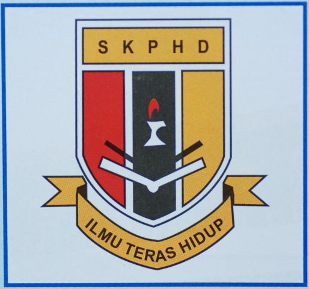
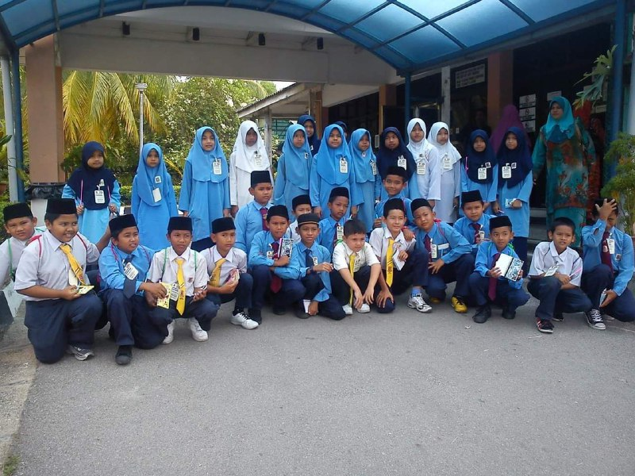
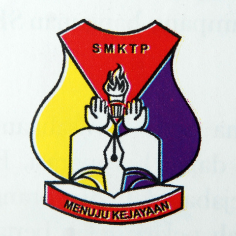
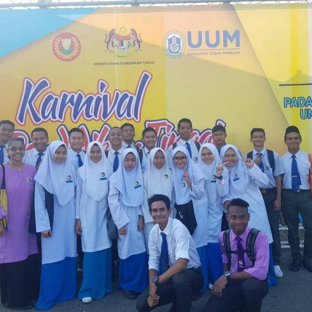
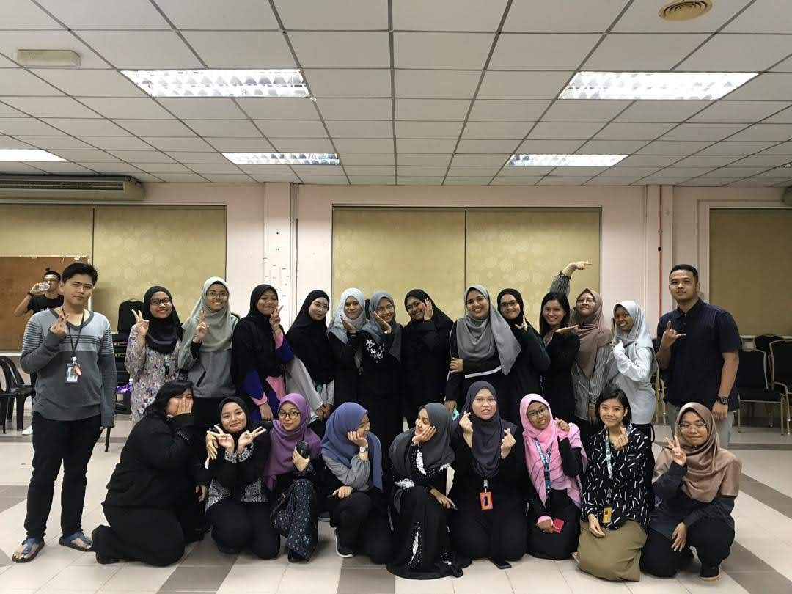
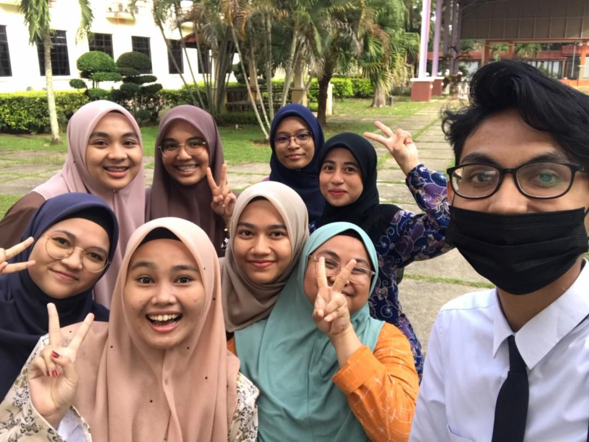

| My educational journey started from 6 years old when my father send me to a kindergarten. Being the youngest child in my family, I was excited to learning something because seeing my brothers going to school make me want to experience one. Then, I go to SK Penghulu Haji Darus enjoying my primary school time from grade 1 untill grade 6. Next, I go to SMK Tanjung Pauh since form 1 untill form 5 and got 6A's in SPM. Then, I furthered my studies in Diploma of Library Management in UiTM Kedah for 2 years. Now, I further my study in Degree, still in Library Management. I wish I can finish my study with flying colours. |
|---|
| Place of Education | Year | Photo |
|---|---|---|
| 
Sekolah Rendah Penghulu Haji Darus (Primary School) |
2008-2013 |  |
| 
Sekolah Menengah Kebangsaan Tanjung Pauh (Secondary School) |
2014-2018 |  |

UiTM Kedah (Diploma) |
2019-2021 |  |
|
UiTM Kedah (Degree) |
2022 |  |